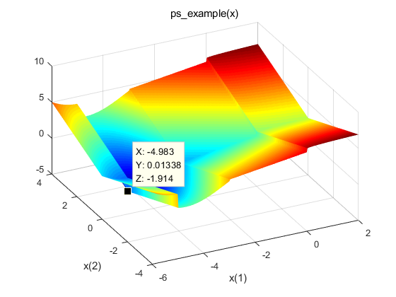
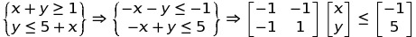
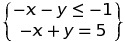
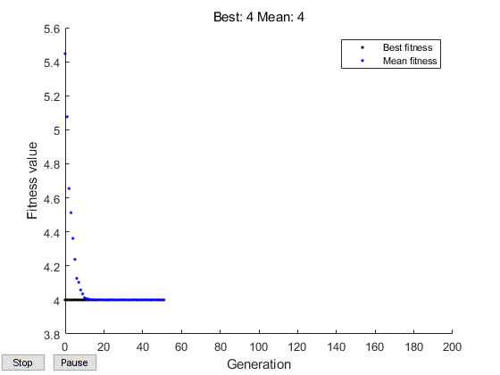

学习
Matlab GA函数
- 2018-06-08
- NAke
Matlab自带GA函数
我使用的matlab是2017b，但是我在官方查找文档，其中的例子这个版本没有。所以我摸索了一番。使用这个函数的动机是我需要是用libsvm做回归模型的训练，其中训练的优化函数是遗传算法（谢菲尔德工具箱），老的工具箱不支持并行计算以及GPU加速，所以我使用Matlab自带的遗传算法函数进行参数的优化。
利用ga优化非光滑函数
程序
xi = linspace(-6,2,300);
yi = linspace(-4,4,300);
[X,Y] = meshgrid(xi,yi);
Z = ps_example([X(:),Y(:)]);% 构造函数
Z = reshape(Z,size(X));
surf(X,Y,Z,'MeshStyle','none')% 绘图
colormap 'jet'
view(-26,43)
xlabel('x(1)')
ylabel('x(2)')
title('ps\_example(x)')
rng default % 保证再生性
x = ga(@ps_example,2)结果：
Optimization terminated: average change in the fitness value less than options.FunctionTolerance.
x =
-4.6793 -0.0860函数图像：

分析
GA函数最基本的用法就是构造一个输入为行向量，输出为数值的函数例如Z = ps_example([X(:),Y(:)])。 接下来使用GA函数的时候，第一个参数是函数句柄，第二个参数是函数参数个数。 返回值则是输出参数函数句柄所使用的参数行向量矩阵。
最小化具有线性约束的非光滑函数
程序
待寻优函数的输入参数是一个行向量，因此传入x(1)代表x，x(2)代表y。 如果需要设置区域范围x + y >= 1和y <= 5 + x的ps_example函数最小化。 首先, 将两个不等式约束转换为矩阵形式A*x <= b。换言之, 获取不等式左侧的x变量, 并使两个不等式小于等于:

那么将矩阵乘法的系数作为约束条件：令A = [-1,-1;-1,1]; b = [-1;5];。全程序如下：
xi = linspace(-6,2,300);
yi = linspace(-4,4,300);
[X,Y] = meshgrid(xi,yi);
Z = ps_example([X(:),Y(:)]);% 构造函数
Z = reshape(Z,size(X));
+ A = [-1,-1;% 添加约束
+ -1,1];
+ b = [-1;5];
surf(X,Y,Z,'MeshStyle','none')% 绘图
colormap 'jet'
view(-26,43)
xlabel('x(1)')
ylabel('x(2)')
title('ps\_example(x)')
rng default; % 再生性
+ x = ga(@ps_example,2,A,b)结果如下：
Optimization terminated: average change in the fitness value less than options.FunctionTolerance.
x =
0.9991 -0.0000总结
为待寻优函数添加约束条件时，需要将其转换为矩阵乘法的形式，再提取出其中的参数。
最小化具有线性等式和不等式约束的非光滑函数
程序
如果添加的约束条件不是小于等于，而是一个小于等于，一个等于。
那么设置约束条件时就需要分开设置(A对应b,Aeq对应beq):
修改ga函数输入为：
结果：
Optimization terminated: average change in the fitness value less than options.FunctionTolerance.
x = 1×2
-2.0000 2.9990结论
小于等于的约束条件和等于的约束条件要分开来写。 # 线性约束和边界优化 ## 程序 保持上一例不变，现在若要约束x,y的取值范围为1 <= x <= 6和-3 <= y <= 8。 那么设置界限lb和ub。
修改ga函数为：
结果：
Optimization terminated: average change in the fitness value less than options.FunctionTolerance.
x = 1×2
1.0001 5.9992结论
对于输入参数限制的进一步深入。
利用ga优化非线性约束
程序
如果约束条件改为非线性的函数：\(2x^2+y^2\le3\)和\((x^2+1)^2=(\frac{y}{2})^4\)。 那么首先先将非线性的约束条件写成函数的形式： 1. 新建函数ellipsecons.m ```matlab function [c,ceq] = ellipsecons(x)
c = 2*x(1)^2 + x(2)^2 - 3;
ceq = (x(1)+1)^2 - (x(2)/2)^4;
end
```修改原程序为：
xi = linspace(-6,2,300); yi = linspace(-4,4,300); [X,Y] = meshgrid(xi,yi); Z = ps_example([X(:),Y(:)]);% 构造函数 Z = reshape(Z,size(X)); surf(X,Y,Z,'MeshStyle','none')% 绘图 colormap 'jet' view(-26,43) xlabel('x(1)') ylabel('x(2)') title('ps\_example(x)') rng default; % 再生性 x = ga(@ps_example,2,[],[],[],[],[],[],@ellipsecons)结果：
Optimization terminated: average change in the fitness value less than options.FunctionTolerance
and constraint violation is less than options.ConstraintTolerance.
x =
-0.9766 0.0362结论
前面四个空矩阵都是ps_example的约束条件，约束条件函数ellipsecons的约束条件是后面两个空矩阵。 # 使用非默认选项最小化 ## 程序 为了获得更精确的解决方案, 可以将约束公差设置为1e-6。并监视规划求解进度, 设置一个绘图函数。 总程序如下：
close all
clear
xi = linspace(-6,2,300);
yi = linspace(-4,4,300);
[X,Y] = meshgrid(xi,yi);
Z = ps_example([X(:),Y(:)]);% 构造函数
Z = reshape(Z,size(X));
A = [-1 -1];%添加约束
b = -1;
Aeq = [-1 1];
beq = 5;
surf(X,Y,Z,'MeshStyle','none')% 绘图
colormap 'jet'
view(-26,43)
xlabel('x(1)')
ylabel('x(2)')
title('ps\_example(x)')
options = optimoptions('ga','ConstraintTolerance',1e-6,'PlotFcn', @gaplotbestf);%设置选项
rng default; % 再生性
x = ga(@ps_example,2,A,b,Aeq,beq,[],[],[],options)结果：
Optimization terminated: average change in the fitness value less than options.FunctionTolerance.
x =
-2.0000 3.0000
实例：优化libsvm训练模型
很难受，我尝试改写了程序，但是并不能使用并行加速，还是很慢。。接下来我要找别的方式去加速。